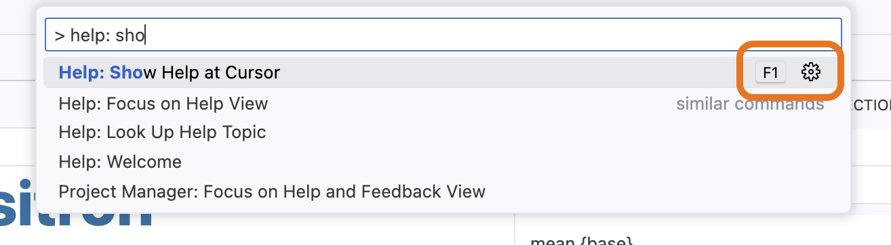
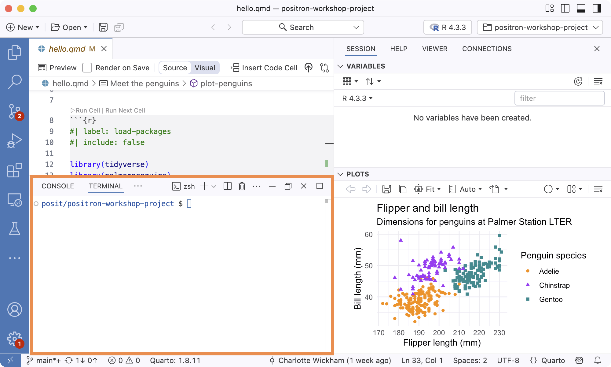
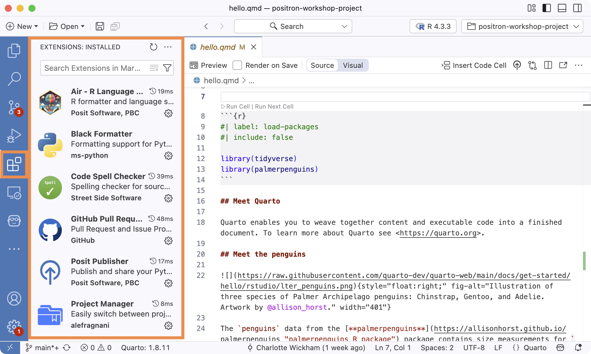

Bingo Solutions
Editor
A way to open a new R script file
File > New File… or,
New > New File…
Then R File
Command Palette: R: New R File
Cmd/Ctrl+Shift+NFile Explorer:
New File… button
A way to see and edit two files side by side
Hit the Split Editor button (
) in the Editor toolbar: Then open a file.
Right-click on a file in the Explorer and select Open to the Side.
Command: Go to File… and then hit the Split Editor button (
):
The shortcut to send R code to the Console
Cmd/Ctrl + Enter
The “Find and Replace” dialog box
Edit > Find
Cmd/Ctrl+F
Hit the chevron (
There is also a Search in the Activity Bar that allows you to Find and Replace across files in the project.
The shortcut for the command “Help: Show help at cursor”
F1

The shortcut for “Toggle Line Comment”
Cmd/Ctrl + Shift + C
You need to have a file open in the Editor to use this shortcut.
It will comment out the current line or selected lines of code.
The shortcut to insert the pipe, e.g. |>
Cmd/Ctrl + Shift + M
Command: Preferences: Open Keyboard Shortcuts
The shortcut to insert “<-”
Alt/Option + -
Command: Preferences: Open Keyboard Shortcuts
Console
The version of R running in the Console
In the Console startup message:
In the Session Selector:
Under Console Info:
The current working directory of the Console
Variables you’ve defined in the Console
The Variables section of the Session pane
A way to start another Console
New button (
) in Panel toolbar Interpreter selector:
- Click on Interpreter selector
- Select Start New Interpreter Session
Command: Interpreter: Start New Interpreter Session
File Explorer
A prompt to “Open a folder”
File Explorer comes alive once a folder is opened:
An action you can take on a folder once it is open
- Buttons: New File…, New Folder
- Right-click in Explorer for more options
Data Explorer
Run View(mtcars) in the Console first.
Data Explorer: the car with the highest mpg
Click on the More button (
) in the mpgcolumn, then Sort DescendingToyota Corolla has the highest mpg
Data Explorer: the number of cars where cyl is 4
Click on the More button (
) in the cylcolumn, then Add FilterSet
cylIs equal to4and click Apply FilterActive filter is shown at the top of the Data Explorer. Footer shows the number in the current view. There are 11 cars with 4 cylinders.
Other panes
Where Git information and actions live
Activity Bar: Source Control (
Where help, e.g. ?mean, displays
In the Help pane:
A terminal, i.e. “a shell”
In the Panel next to Console:

An RStudio pane that isn’t in Positron
- History (see the button that opens Console history in Editor)
- Packages
- Build
- Tutorial
- Background Jobs
Customization
Dark mode
Command: Preferences: Toggle between Light/Dark Themes
How to change the IDE theme
Command: Preferences: Color Theme
Choose from built-in themes or “Browse Additional Color Themes …” to sample and install more themes from the Marketplace.
How to change the IDE zoom level
Command: View: Zoom In or View: Zoom Out
Cmd/Ctrl++,Cmd/Ctrl+-Zoom in Status Bar
The currently installed extensions
Command: Extensions: Focus on Installed View
In the Extensions pane in the Activity Bar:
...> Views > Installed

Where to configure settings
Command: Preferences: Open Settings (UI)
Cmd/Ctrl+,
The setting that enables RStudio shortcuts
Workbench > Keybindings: RStudio Keybindings
See also Positron Docs: RStudio Keybindings
Other
Another way to open the Command Palette
Help > Show All Commands
Search Bar: add
>
The version of Positron you’re running
Positron > About Positron (Mac) or Help > About (Windows/Linux)
Command: Help: About
The purpose of an icon you’ve never seen before
Hover and you’ll get a tooltip